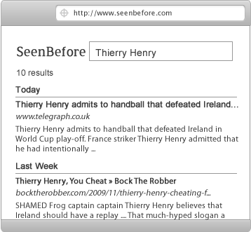

... you know the answer is SeenBefore but why does this story not stop there?
Well we don't want Max to give up and we want to show him and you just how awesome SeenBefore really is. Max is a trier, we hope you are too.
SeenBefore only searches pages you have read before. When Max uses Seenbefore he finds just 10 results and 4 from last week making it really easy for him to find that article on "Thierry Henry"
